À propos
Site réalisé dans le cadre du TP 2 sur Git : commit initial, envoi sur GitHub, puis modification et nouvel envoi.
Commandes utilisées
git init: créer le dépôt localgit add/git commit: enregistrer une versiongit remote add origin: relier le dépôt GitHubgit push: envoyer les commits sur GitHub
Témoignages
« Git m'a permis de ne plus jamais perdre une version de mon travail. » — Awa, étudiante
« Les branches rendent l'ajout de fonctionnalités simple et sans risque. » — Karim, développeur
Captures des TP
TP 1 — Dépôt local
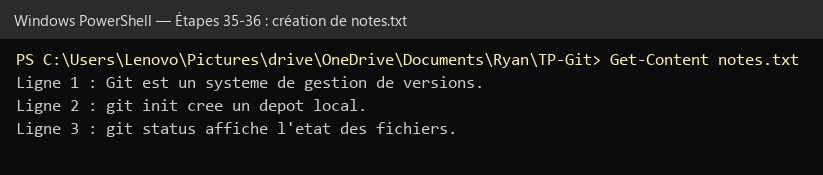
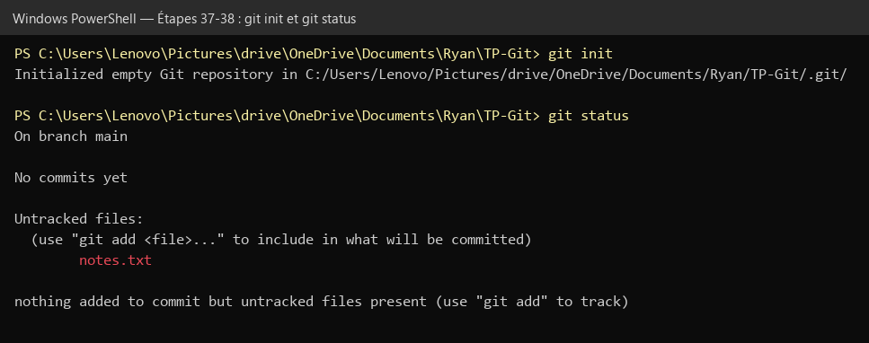
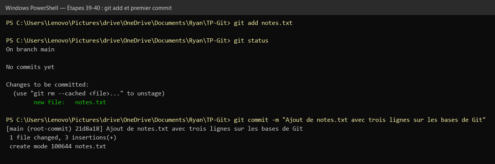
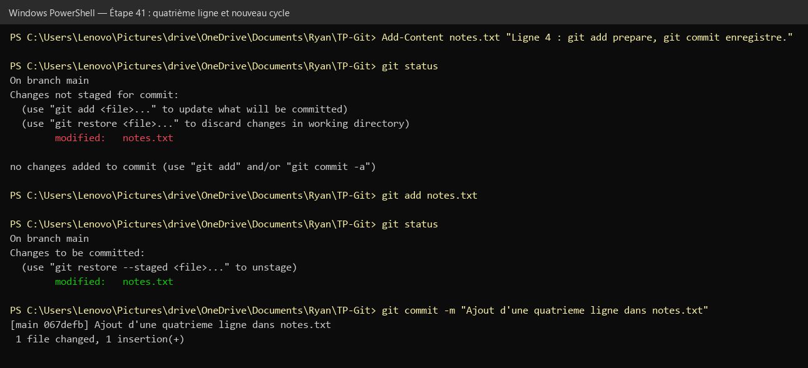
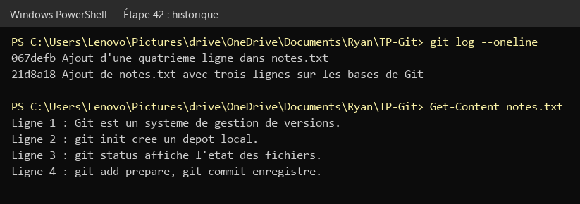
TP 2 — Publier sur GitHub
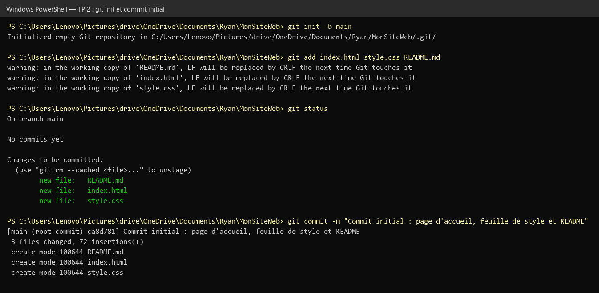
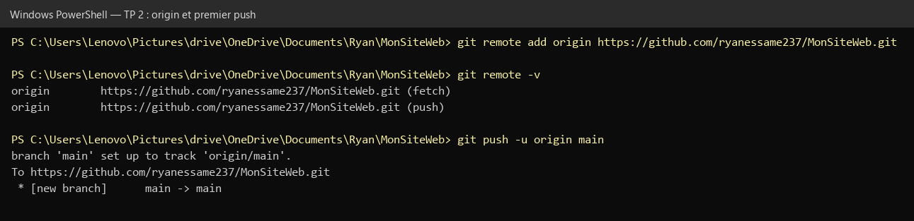
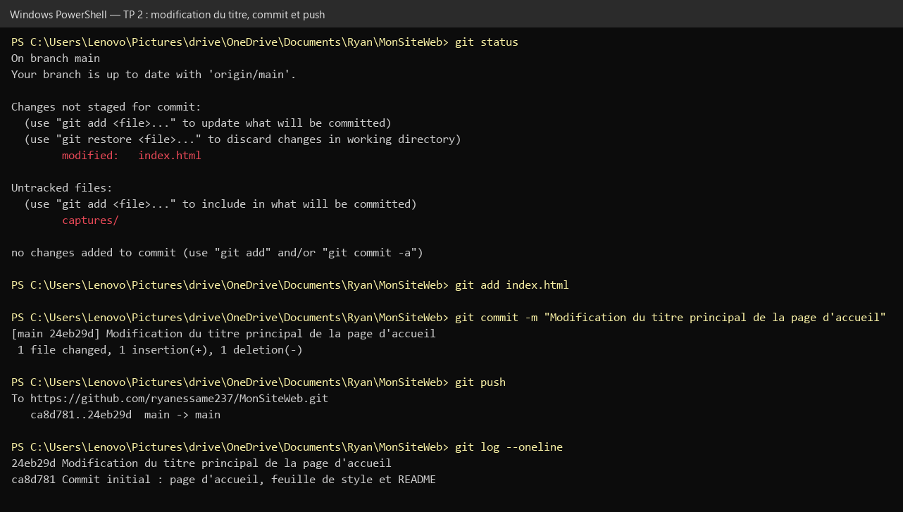
TP 3 — Branche et Pull Request
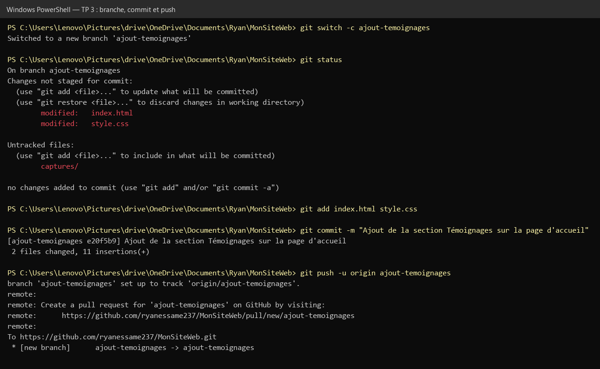
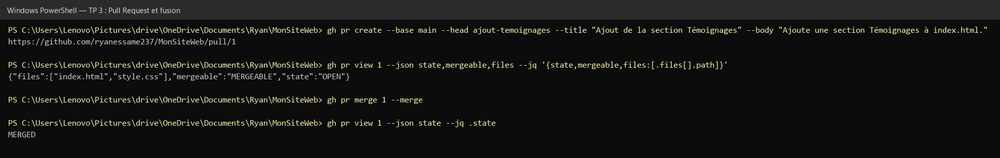
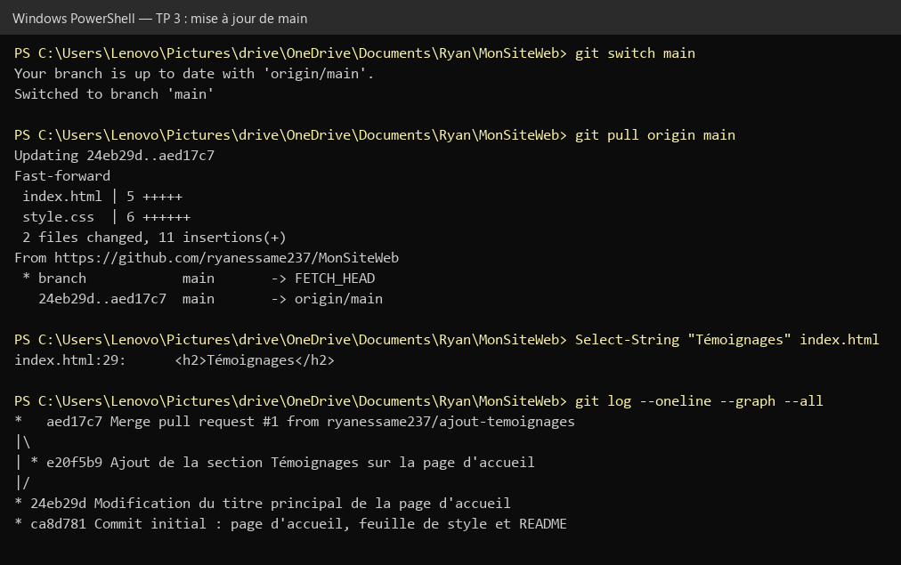